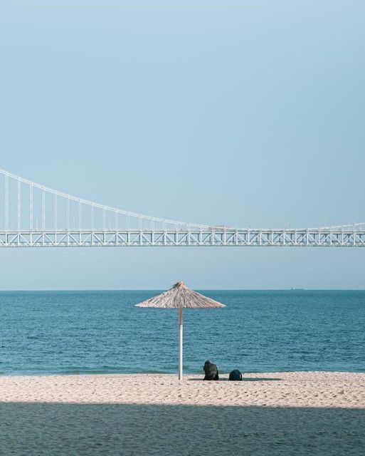
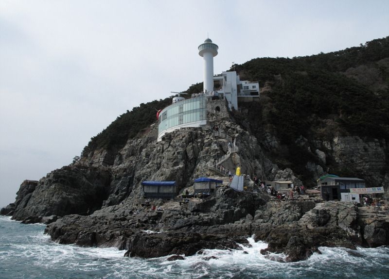
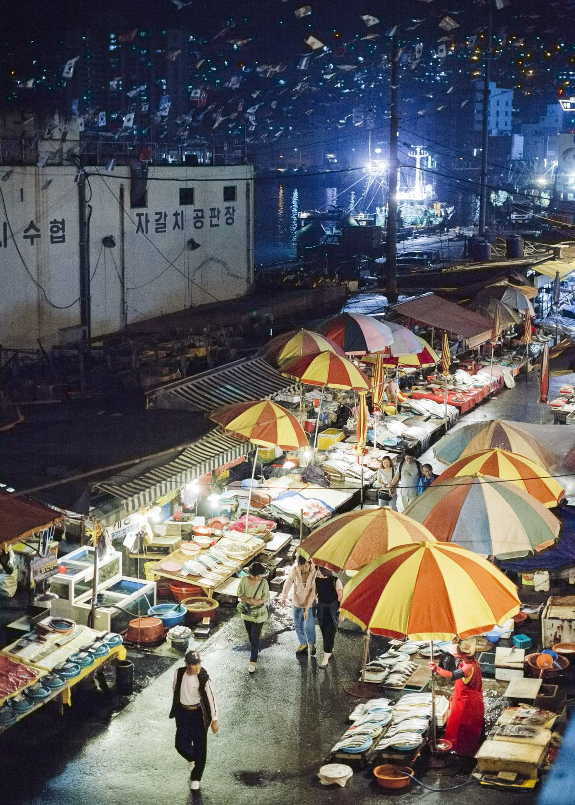

부산 관광지 소개
홈
관광지 소개
맛집 / 일정
🌙 다크 모드
로그아웃
오늘 어디 갈까?
버튼을 눌러 오늘의 추천 여행지를 확인하세요!
랜덤 여행지 추천
부산 인기 관광지
1. 해운대 해수욕장
설명 보기
네이버 리뷰
♡ 찜하기
부산 최고의 바다 풍경과 야경을 즐길 수 있는 대표 해수욕장입니다.
2. 광안리 해변

설명 보기
네이버 리뷰
♡ 찜하기
광안대교 야경이 아름답고 감성 카페가 가득한 해변입니다.
3. 감천문화마을
설명 보기
네이버 리뷰
♡ 찜하기
알록달록한 마을과 포토존이 많아 사진 찍기 좋은 예술 마을입니다.
4. 태종대

설명 보기
네이버 리뷰
♡ 찜하기
기암절벽·울창한 숲·바다가 조화를 이루는 부산 최고의 자연 명소입니다.
5. 오륙도 스카이워크
설명 보기
네이버 리뷰
♡ 찜하기
유리 바닥 아래 펼쳐진 바다 풍경이 짜릿함을 주는 명소입니다.
6. 자갈치 시장

설명 보기
네이버 리뷰
♡ 찜하기
부산 대표 수산 시장으로 신선한 해산물을 맛볼 수 있는 곳입니다.